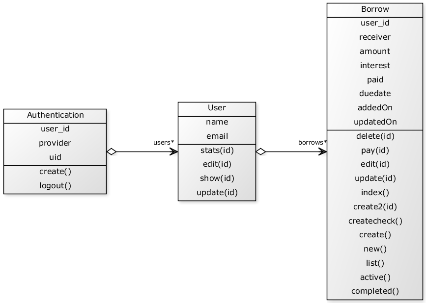

Proje adı: Prestamé
Proje takımı: Ali Onur Baykal
Açıklama: Prestamé, sosyal ağlarla iç içe kurulmuş bir borç takip sistemidir.
Yazılımın yapacağı işler (en az 5):
- Borç Takibi (Borç Eklemek, Kapatmak, Silmek, Düzenlemek)
- Sosyal Ağ Entegrasyonu (Sosyal Ağ İle Giriş, Sosyal Ağlarda Paylaşma)
- Grafik Üretimi (Sistem geneli ve kullanıcı için istatistiksel grafik üretimi)
- E-Mail ile uyarı (Vadesi gelen, yeni eklenen, ödenen borç takibi)
- Borç Listeleme (Ödenmiş ve Ödenmemişleri listeleme, yeni borç eklerken ödenmemiş borç sahipleri arasında arama)
Kullanılan teknoloji ve bileşenler:
- Ruby on Rails
- Twitter Bootstrap
- Twitter API
- Facebook Developer API
- GitHub Bash
- Heroku
- SQLite
- PostgreSQL
Tasarım:
